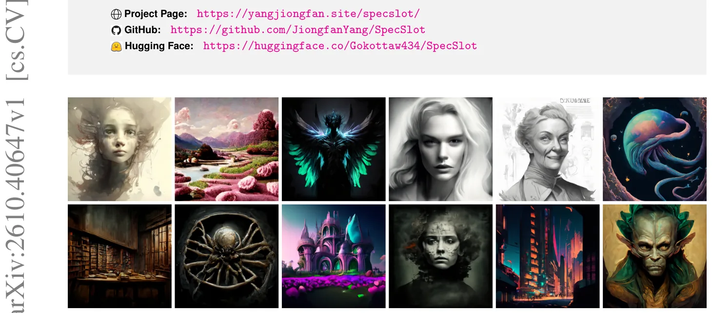
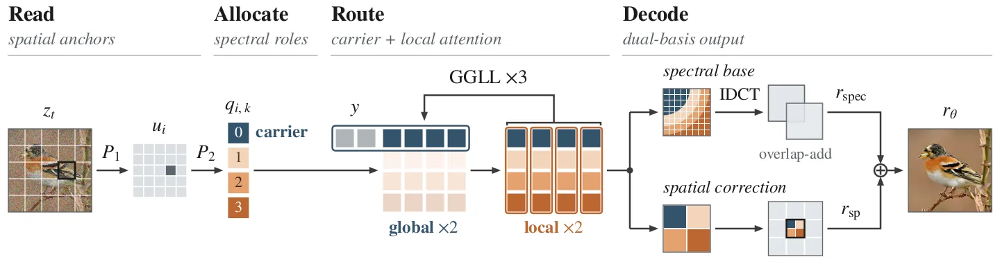
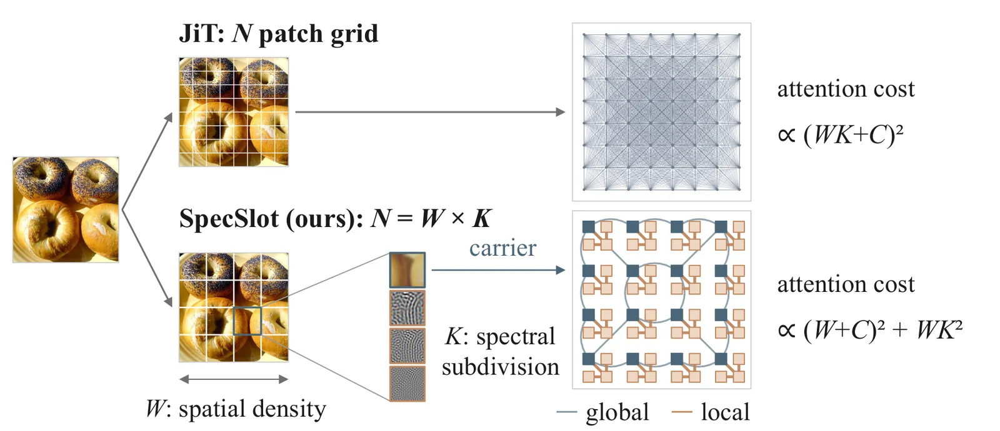
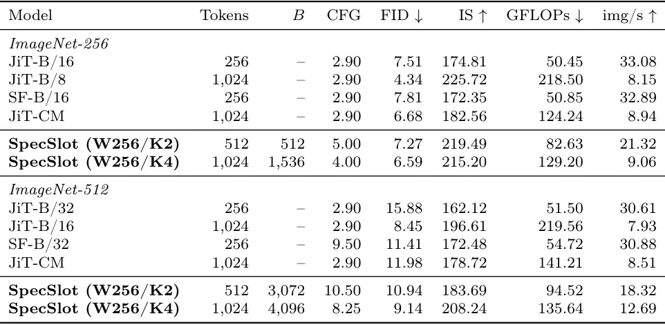

O custo do detalhe em Transformers de espaço pixel
Os Transformers geradores de espaço pixel (pixel-space) aprendem diretamente do ruído aos pixels da imagem, eliminando a necessidade de um autoencoder previamente treinado e contornando o gargalo de compressão. No entanto, essa simplicidade tem um preço computacional elevado: a imagem de resolução completa deve ser representada como uma sequência de tokens. A abordagem padrão utiliza um token por patch espacial da imagem. Consequentemente, capturar detalhes mais finos exige aumentar o número de tokens, o que torna o mecanismo de atenção global quadraticamente mais caro.
A limitação do acoplamento espacial-espectral
Em modelos tradicionais, como o JiT (Jigsaw-Transformer), reduzir o tamanho do patch de 16x16 para 8x8 em uma imagem de 256x256 aumenta o número de tokens de 256 para 1.024. Isso eleva o custo da atenção densa em 16 vezes. Métodos existentes tentam mitigar esse custo através de atenção eficiente (janelas, esparsidade) ou sistemas multiescala, mas mantêm o acoplamento entre o detalhe de saída e a grade espacial. Ou seja, para ter mais detalhes, você é forçado a ter mais comunicação global, mesmo que nem todos os detalhes necessitem desse contexto amplo.

A intuição: frequências baixas precisam de contexto global
A observação central deste trabalho é que detalhes finos não exigem necessariamente mais comunicação global. No domínio da frequência, a estrutura de baixa frequência carrega a organização geral da imagem e se beneficia do intercâmbio de informações por toda a imagem. Já os detalhes de alta frequência são predominantemente locais. Um token que carrega estrutura ampla ganha ao trocar informações com a imagem inteira; um token que carrega ruído ou textura fina não.
SpecSlot: Leitura, Alocação e Roteamento
Baseado nisso, os autores propõem o SpecSlot, um Transformer de fluxo retificado (rectified-flow) que desacopla o detalhe de saída do comprimento da sequência de atenção global. O método organiza a computação em três operações: Leitura (Read), Alocação (Allocate) e Roteamento (Route). A ideia é tornar os papéis de saída explícitos e usá-los para controlar a comunicação, separando a densidade das âncoras espaciais da subdivisão espectral.

Mecanismo: A alocação como problema de orçamento
O SpecSlot introduz duas variáveis de alocação: W (densidade de âncoras espaciais) e K (subdivisão espectral por âncora). O orçamento total de tokens N é dividido em W âncoras e K slots por âncora. Isso permite que o modelo aumente o detalhe espectral (aumentando K) sem aumentar a sequência global de atenção, que permanece restrita às W âncoras. A comunicação global é gasta apenas no papel que dela precisa.
Read: Âncoras Espaciais e Expansão de Slots
Na fase de Leitura, o modelo extrai evidências de entrada em uma grade de âncoras não sobrepostas. Cada célula da grade é projetada em um vetor de âncora. Um mixer de entrada (uma convolução residual depthwise) permite a troca de evidências entre células vizinhas antes da divisão em papéis. Em seguida, cada vetor de âncora é expandido em K estados ocultos (slots). Esses slots compartilham a mesma informação de entrada inicial, mas seus papéis são definidos por posições de slot aprendidas e pela estrutura de roteamento posterior.
Allocate: Coeficientes DCT e Síntese de Pixel
Na fase de Alocação, cada slot recebe uma fatia fixa e disjunta de coeficientes da Transformada Discreta de Cosseno (DCT) do patch de saída. Os índices radiais da DCT são ordenados por frequência e divididos igualmente entre os K slots. O slot 0 recebe as frequências mais baixas (estrutura global), enquanto os slots subsequentes recebem frequências progressivamente mais altas (detalhes finos). Essa divisão radial garante que cada coeficiente seja previsto exatamente uma vez, cobrindo todo o grid de saída.

Route: Roteamento baseado em papel espectral
O Roteamento é onde a eficiência computacional é realizada. Apenas o slot atribuído ao grupo de menor frequência (slot 0) de cada âncora participa da etapa de atenção global. Todos os K slots de cada âncora interagem localmente dentro do seu próprio bloco. Isso significa que o custo da atenção global escala apenas com W (o número de âncoras), não com N (o número total de slots). Detalhes finos são refinados localmente, sem a sobrecarga de comunicação global.
Decodificação e Correção Espacial
Após as etapas de processamento, os estados finais dos slots são usados para decodificar uma base espectral sobreposta (lapped-DCT) e uma correção espacial local. Uma cabeça espacial adicional adiciona uma correção local à previsão espectral, reutilizando os mesmos estados dos slots sem introduzir novos tokens. O estado generativo, o alvo e a função de perda permanecem no espaço pixel, garantindo consistência com os objetivos de fluxo retificado tradicionais.
Resultados no ImageNet-256
No ImageNet-256, o SpecSlot oferece dois pontos operacionais não dominados entre o JiT-B/16 e o JiT-B/8. O modelo SpecSlot-K4 atinge um FID comparável ao controle JiT-CM (JiT com FLOPs correspondentes) em quase o mesmo custo computacional, mas converge mais rápido nos estágios iniciais de treinamento. Isso demonstra que a separação de papéis permite uma utilização mais eficiente do orçamento de tokens para a mesma qualidade final.
Resultados no ImageNet-512 e Eficiência
O ganho é mais pronunciado no ImageNet-512. O SpecSlot-K4 melhora o FID em 2.84 em relação ao controle JiT-CM, utilizando 3.9% menos FLOPs. Além disso, ele se aproxima do FID do JiT-B/16 (que é mais caro) com 38.2% menos custo computacional. A tabela de resultados mostra que o modelo mantém alta taxa de imagens por segundo (throughput), indicando que a eficiência teórica se traduz em performance prática.

Geração Texto-Imagem
A eficácia do método também se estende à geração condicional por texto. No benchmark DPG-Bench, o SpecSlot supera o JiT-B/8 em 1.06 pontos, enquanto utiliza 40.6% menos custo de forward. Isso sugere que a capacidade de modelar detalhes finos localmente, sem sacrificar a estrutura global, beneficia tanto a geração de classes quanto a geração guiada por prompts textuais.
Limitações e Escopo
É importante notar que os resultados foram obtidos em configurações específicas de fluxo retificado e que o modelo foi treinado com um orçamento de tokens fixo. A eficácia do roteamento depende da premissa de que detalhes de alta frequência são de fato locais, o que é verdade para imagens naturais, mas pode não se aplicar a todos os domínios de dados. Além disso, a complexidade de implementação é maior devido à necessidade de gerenciar múltiplos slots e bases espectrais sobrepostas.
Conclusão
O SpecSlot demonstra que a tokenização pode ser vista como um problema de alocação explícita. Ao separar a densidade espacial da resolução espectral e restringir a atenção global aos papéis de baixa frequência, é possível alcançar alta qualidade visual com custos computacionais reduzidos. Este trabalho abre novas direções para a eficiência de Transformers de espaço pixel, mostrando que detalhe e comunicação global não precisam ser acoplados.
O que fica
- SpecSlot separa a densidade de âncoras espaciais da resolução espectral, reduzindo o custo de atenção global.
- Apenas a componente de baixa frequência participa do attention global; detalhes finos são processados localmente.
- Em ImageNet-512, melhora o FID em 2.84 sobre o controle JiT com 3.9% menos FLOPs.
- Em geração texto-imagem, supera JiT-B/8 no DPG-Bench com 40.6% menos custo de forward.
Paper original: Read, Allocate, Route: Role-Coupled Tokenization for Pixel-Space Generative Transformers
Comentários
Nenhum comentário ainda. Seja o primeiro.